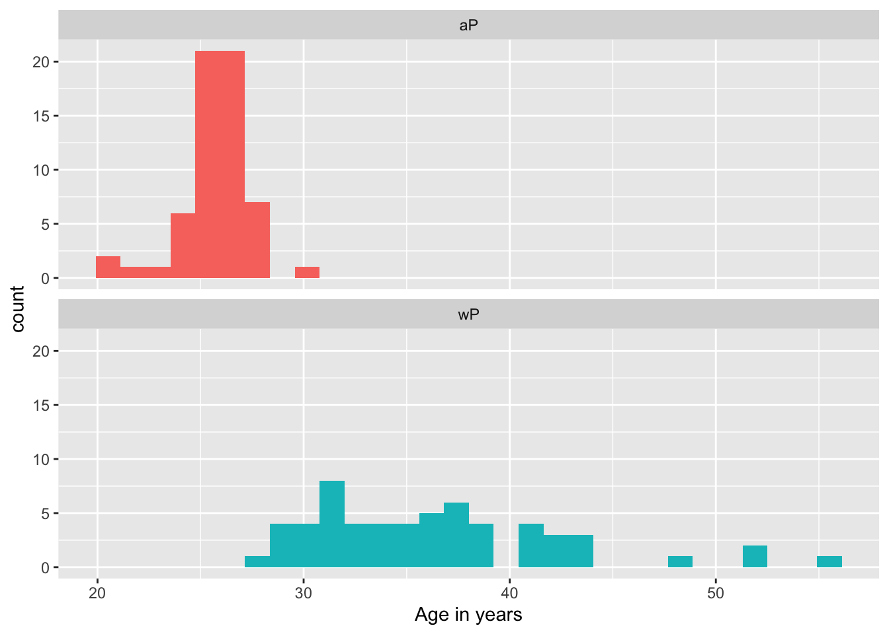
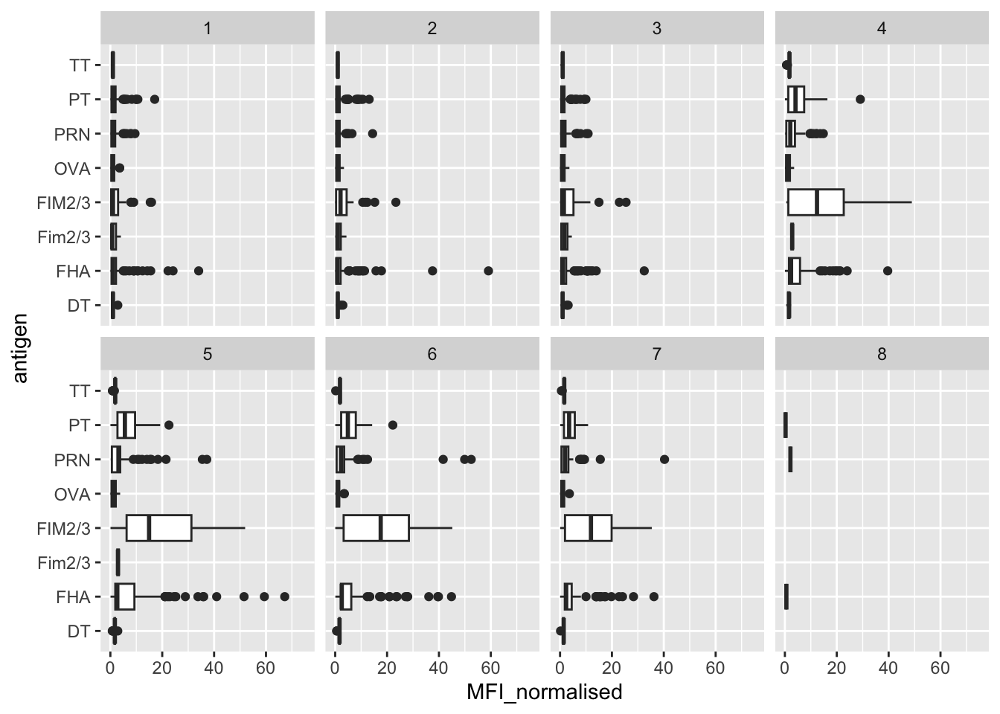
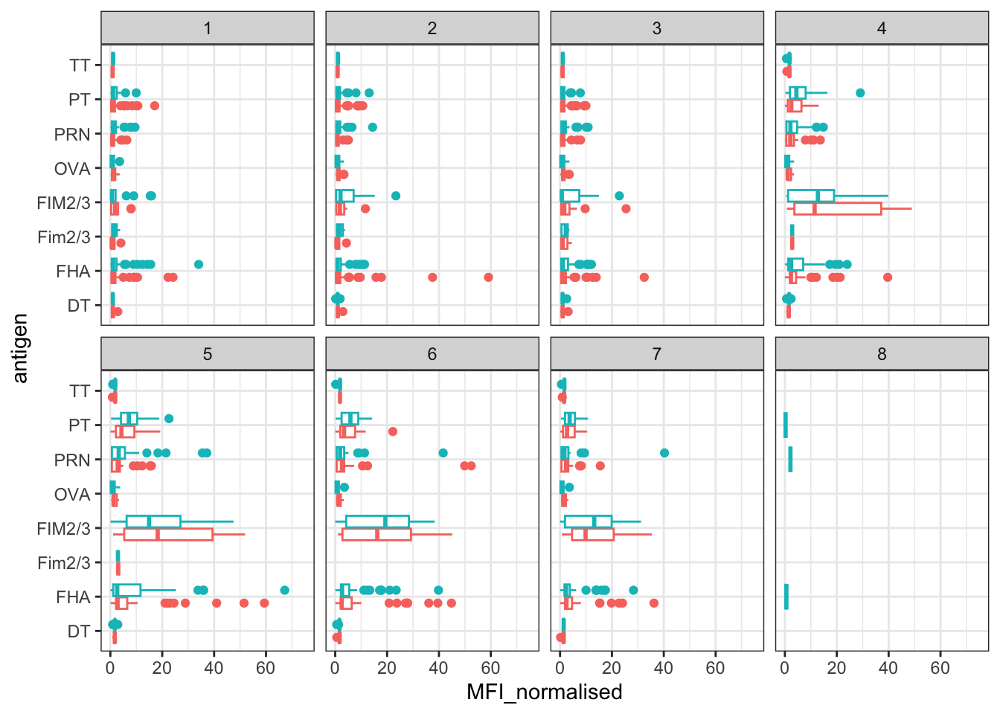
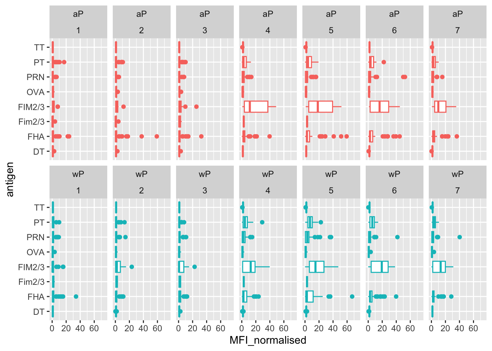
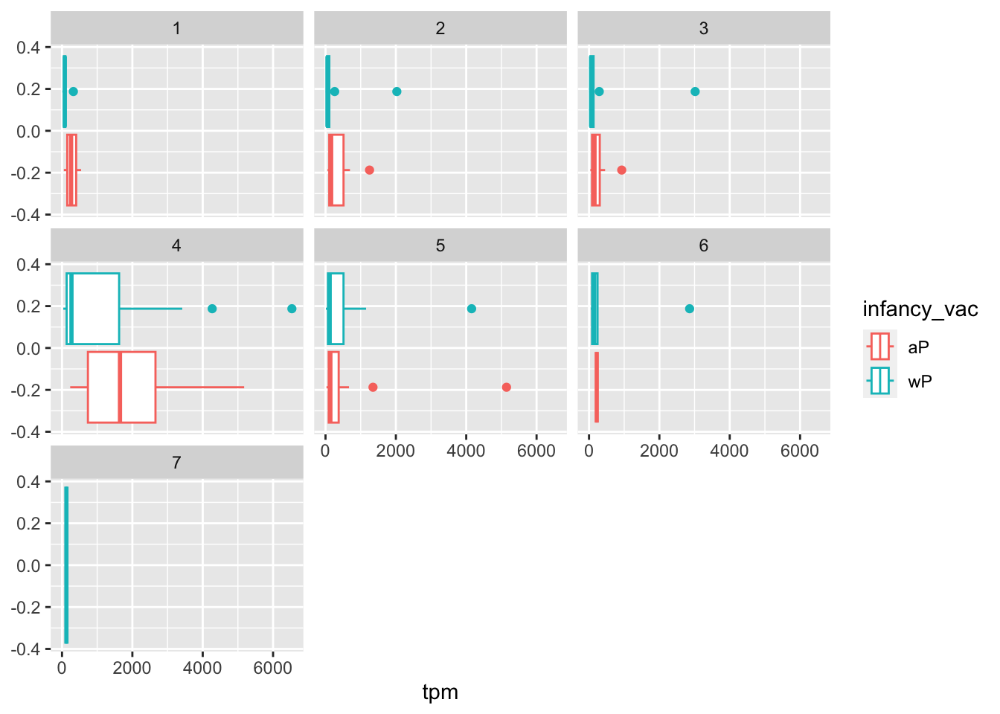

ggplot(cdc) +
aes(___, ___) +
geom_point() +
geom____() +
labs(___)Pertussis and the CMI-PB project
Educational material for the CMI-PB project
Barry J. Grant ![]()
Bjoern Peters
Background
Pertussis (more commonly known as whooping cough) is a highly contagious respiratory disease caused by the bacterium Bordetella pertussis (Figure 1). People of all ages can be infected leading to violent coughing fits followed by a characteristic high-pitched “whoop” like intake of breath. Children have the highest risk for severe complications and death. Recent estimates from the WHO indicate that ~16 million cases and 200,000 infant deaths are due to pertussis annually (Black et al. 2010).

Optional: Link to a video of a child with pertussis (Note that some viewers may find this upsetting).
1. Investigating pertussis cases by year
The United States Centers for Disease Control and Prevention (CDC) has been compiling reported pertussis case numbers since 1922 in their National Notifiable Diseases Surveillance System (NNDSS). We can view this data on the CDC website here: https://www.cdc.gov/pertussis/surv-reporting/cases-by-year.html
- Q1. With the help of the R “addin” package datapasta assign the CDC pertussis case number data to a data frame called
cdcand use ggplot to make a plot of cases numbers over time.
Hint
To help “scrape” this data from the CDC website you can install the datapasta package, which will appear under the RStudio “Addins” menu button and allow you to web-scrape by copying tables of data from any website or PDF and then in RStudio selecting “Paste as data.frame” from the RStudio “Addins” menu.
Key point: Pertussis vaccination is, in general, highly effective at preventing the disease. In the pre-vaccine era (before 1946) pertussis was a much more common disease and a major cause of infant mortality 2. As we see clearly from analysis of the CDC tracking data above, introduction of the first pertussis vaccination in the United States in 1946 resulted in a dramatic reduction in the number of yearly cases from > 200,000 in the 1940s to < 2,000 in the 1970s.
2. A tale of two vaccines (wP & aP)
Two types of pertussis vaccines have been developed: whole-cell pertussis (wP) and acellular pertussis (aP). The first vaccines were composed of ‘whole cell’ (wP) inactivated bacteria. The latter aP vaccines use purified antigens of the bacteria (the most important pertussis components for our immune system, see Figure 2). These aP vaccines were developed to have less side effects than the older wP vaccines and are now the only form administered in the United States.

Side-note: Currently in United States aP vaccines are administered to infants in combination with those for diphtheria (D) and tetanus (T) in the so-called DTaP vaccine combination. A distinct Tdap formulation, with reduced doses of diphtheria and pertussis, is administered as a boost for preteens, teens, and adults.
For motivated readers there is a nice historical account of the wP to aP vaccine switch in the US in Klein (2014) (Klein 2014)
Let’s return to our CDC data plot and examine what happened after the switch to the acellular pertussis (aP) vaccination program.
- Q2. Using the ggplot
geom_vline()function add lines to your previous plot for the 1946 introduction of the wP vaccine and the 1996 switch to aP vaccine (see example in the hint below). What do you notice?
Hint
Your plot should look something like the one below where we take our plot from Q1 and minimally add two geom_vline(xintercept=___) function calls. Here I also add optional text labels with geom_text() to help annotate the lines.
- Q3. Describe what happened after the introduction of the aP vaccine? Do you have a possible explanation for the observed trend?
Hint
It is clear from the CDC data that pertussis cases are once again increasing. For example, we can see that in 2012 the CDC reported 48,277 cases of pertussis in the United States. This is the largest number of cases reported since 1955, when 62,786 cases were reported. The pertussis field has several hypotheses for the resurgence of pertussis including (in no particular order): 1) more sensitive PCR-based testing, 2) vaccination hesitancy 3) bacterial evolution (escape from vaccine immunity), 4) waning of immunity in adolescents originally primed as infants with the newer aP vaccine as compared to the older wP vaccine.
Key-point: Despite high levels of acellular pertussis (aP) vaccination, the United States and other countries are now experiencing a significant resurgence in pertussis cases with large outbreaks now once again a major public health concern.
Additional points for discussion: How are vaccines currently approved?
- Typically we first examine ‘Correlates of protection’ which are things that can be measured within weeks or months after vaccination, and which are thought to correlate with increased protection from disease. For the aP vaccine this was an induction of antibodies against pertussis toxin (PT) in infants at equivalent levels to those induced by the wP vaccine. The aP vaccines also had less side effects (reduction of sore arms, fever and pain).
- Testing for protection induced by a new vaccine requires a lot of people exposed to the pathogen (like in a pandemic).
- It is impossible to discover a effect 10 years post vaccination in the current trial system.
- It is unclear what differentiates people that have been primed with aP vs. wP long term.
- The CMI-PB project is an attempt to make data on this question open and examinable by all.
3. Exploring CMI-PB data
Why is this vaccine-preventable disease on the upswing? To answer this question we need to investigate the mechanisms underlying waning protection against pertussis. This requires evaluation of pertussis-specific immune responses over time in wP and aP vaccinated individuals.
The new and ongoing CMI-PB project aims to provide the scientific community with this very information. In particular, CMI-PB tracks and makes freely available long-term humoral and cellular immune response data for a large number of individuals who received either DTwP or DTaP combination vaccines in infancy followed by Tdap booster vaccinations. This includes complete API access to longitudinal RNA-Seq, AB Titer, Olink, and live cell assay results directly from their website: https://www.cmi-pb.org/
Key-point: For the CMI-PB project a booster shot is a proxy for what happens when you get infected.
The CMI-PB API returns JSON data
The CMI-PB API (like most APIs) sends responses in JSON format. Briefly, JSON data is formatted as a series of key-value pairs, where a particular word (“key”) is associated with a particular value. An example of the JSON format for Ab titer data is shown below:
{
"specimen_id":1,
"isotype":"IgG",
"is_antigen_specific":true,
"antigen":"PT",
"ab_titer":68.5661390514946,
"unit":"IU/ML",
"lower_limit_of_detection":0.53
}
To read these types of files into R we will use the read_json() function from the jsonlite package. Note that if you want to do more advanced querys of APIs directly from R you will likely want to explore the more full featured rjson package. The big advantage of using jsonlite for our current purposes is that it can simplify JSON key-value pair arrays into R data frames without much additional effort on our part.
# Allows us to read, write and process JSON data
library(jsonlite)Let’s now read the main subject database table from the CMI-PB API. You can find out more about the content and format of this and other tables here: https://www.cmi-pb.org/blog/understand-data/
subject <- read_json("https://www.cmi-pb.org/api/subject", simplifyVector = TRUE) Key-point: The
subjecttable provides metadata about each individual in the study group. For example, their infancy vaccination type, biological sex, year of birth, time of boost etc.
head(subject, 3) subject_id infancy_vac biological_sex ethnicity race
1 1 wP Female Not Hispanic or Latino White
2 2 wP Female Not Hispanic or Latino White
3 3 wP Female Unknown White
year_of_birth date_of_boost dataset
1 1986-01-01 2016-09-12 2020_dataset
2 1968-01-01 2019-01-28 2020_dataset
3 1983-01-01 2016-10-10 2020_dataset- Q4. How many aP and wP infancy vaccinated subjects are in the dataset?
Hint
For these types of questions we can use our old friend the table() function, which will tabulate the number of unique entries for us:
table(subject$infancy_vac)
aP wP
60 58 - Q5. How many Male and Female subjects/patients are in the dataset?
- Q6. What is the breakdown of race and biological sex (e.g. number of Asian females, White males etc…)?
Hint
table(subject$___, subject$___) )| American Indian/Alaska Native | Asian | Black or African American | More Than One Race | Native Hawaiian or Other Pacific Islander | Unknown or Not Reported | White | |
|---|---|---|---|---|---|---|---|
| Female | 0 | 21 | 2 | 9 | 1 | 11 | 35 |
| Male | 1 | 11 | 0 | 2 | 1 | 4 | 20 |
Side-Note: Working with dates
Two of the columns of subject contain dates in the Year-Month-Day format. Recall from our last mini-project that dates and times can be annoying to work with at the best of times. However, in R we have the excellent lubridate package, which can make life allot easier. Here is a quick example to get you started:
library(lubridate)What is today’s date (at the time I am writing this obviously)
today()[1] "2023-10-19"How many days have passed since new year 2000
today() - ymd("2000-01-01")Time difference of 8692 daysWhat is this in years?
time_length( today() - ymd("2000-01-01"), "years")[1] 23.7974Note that here we are using the ymd() function to tell lubridate the format of our particular date and then the time_length() function to convert days to years.
- Q7. Using this approach determine (i) the average age of wP individuals, (ii) the average age of aP individuals; and (iii) are they significantly different?
Hint
Using ymd() function on the appropriate column of our subject data frame together with today’s date we can calculate the age in days for subjects. We can optionally store this back into our subject data frame for later use:
# Use todays date to calculate age in days
subject$age <- today() - ___Next we can use dplyr’s filter() function to limit ourselves to a particular subset of subjects to examine the 6 number summary of their age in years:
library(dplyr)
ap <- subject %>% filter(infancy_vac == "aP")
round( summary( time_length( ap$age, "years" ) ) ) Min. 1st Qu. Median Mean 3rd Qu. Max.
21 26 26 26 27 30 # wP
wp <- subject %>% ___(___ == "wP")
round( summary( time_length( wp$age, "years" ) ) ) Min. 1st Qu. Median Mean 3rd Qu. Max.
28 31 35 36 39 56 - Q8. Determine the age of all individuals at time of boost?
Hint
int <- ymd(subject$date_of_boost) - ymd(subject$year_of_birth)
age_at_boost <- time_length(int, "year")
head(age_at_boost)[1] 30.69678 51.07461 33.77413 28.65982 25.65914 28.77481- Q9. With the help of a faceted boxplot or histogram (see below), do you think these two groups are significantly different?
ggplot(subject) +
aes(time_length(age, "year"),
fill=as.factor(infancy_vac)) +
geom_histogram(show.legend=FALSE) +
facet_wrap(vars(infancy_vac), nrow=2) +
xlab("Age in years")
Hint
These groups are clearly different. It is not necessary but we could calculate a p-value…
# Or use wilcox.test()
x <- t.test(time_length( wp$age, "years" ),
time_length( ap$age, "years" ))
x$p.value[1] 6.813505e-19Joining multiple tables
Read the specimen and ab_titer tables into R and store the data as specimen and titer named data frames.
# Complete the API URLs...
specimen <- read_json("___/specimen", simplifyVector = TRUE)
titer <- read_json("https://www.cmi-pb.org/api/___", simplifyVector = TRUE) To know whether a given specimen_id comes from an aP or wP individual we need to link (a.k.a. “join” or merge) our specimen and subject data frames. The excellent dplyr package (that we have used previously) has a family of join() functions that can help us with this common task:
- Q9. Complete the code to join
specimenandsubjecttables to make a new merged data frame containing all specimen records along with their associated subject details:
meta <- ____join(___, subject)
dim(meta)
head(meta)[1] 939 14
Hint
To answer this question you need to chose the correct join() function (from inner_join(), left_join(), right_join() and full_join() options) as well as select the order of x and y input arguments.


For a nice description of different join types see: https://www.garrickadenbuie.com/project/tidyexplain/ from where the animated images in the HTML version of this document were taken.
- Q10. Now using the same procedure join
metawithtiterdata so we can further analyze this data in terms of time of visit aP/wP, male/female etc.
abdata <- inner_join(___, meta)
dim(abdata)Joining with `by = join_by(specimen_id)`[1] 46171 21- Q11. How many specimens (i.e. entries in
abdata) do we have for eachisotype?
Hint
We can use our old friend the table() function on the isotype column to answer this question:
table(abdata$isotype)
IgE IgG IgG1 IgG2 IgG3 IgG4
6698 4108 8836 8843 8843 8843 - Q12. What do you notice about the number of visit 8 specimens compared to other visits?
Hint
You can again use table() this time on the the visit column to help answer this question.
4. Examine IgG1 Ab titer levels
Now using our joined/merged/linked abdata dataset filter() for IgG1 isotype and exclude the small number of visit 8 entries.
ig1 <- abdata %>% filter(isotype == "IgG1", visit!=8)
head(ig1) specimen_id isotype is_antigen_specific antigen MFI MFI_normalised
1 1 IgG1 TRUE ACT 274.355068 0.6928058
2 1 IgG1 TRUE LOS 10.974026 2.1645083
3 1 IgG1 TRUE FELD1 1.448796 0.8080941
4 1 IgG1 TRUE BETV1 0.100000 1.0000000
5 1 IgG1 TRUE LOLP1 0.100000 1.0000000
6 1 IgG1 TRUE Measles 36.277417 1.6638332
unit lower_limit_of_detection subject_id actual_day_relative_to_boost
1 IU/ML 3.848750 1 -3
2 IU/ML 4.357917 1 -3
3 IU/ML 2.699944 1 -3
4 IU/ML 1.734784 1 -3
5 IU/ML 2.550606 1 -3
6 IU/ML 4.438966 1 -3
planned_day_relative_to_boost specimen_type visit infancy_vac biological_sex
1 0 Blood 1 wP Female
2 0 Blood 1 wP Female
3 0 Blood 1 wP Female
4 0 Blood 1 wP Female
5 0 Blood 1 wP Female
6 0 Blood 1 wP Female
ethnicity race year_of_birth date_of_boost dataset
1 Not Hispanic or Latino White 1986-01-01 2016-09-12 2020_dataset
2 Not Hispanic or Latino White 1986-01-01 2016-09-12 2020_dataset
3 Not Hispanic or Latino White 1986-01-01 2016-09-12 2020_dataset
4 Not Hispanic or Latino White 1986-01-01 2016-09-12 2020_dataset
5 Not Hispanic or Latino White 1986-01-01 2016-09-12 2020_dataset
6 Not Hispanic or Latino White 1986-01-01 2016-09-12 2020_dataset
age
1 13805 days
2 13805 days
3 13805 days
4 13805 days
5 13805 days
6 13805 days- Q13. Complete the following code to make a summary boxplot of Ab titer levels (MFI) for all antigens:
ggplot(ig1) +
aes(___, antigen) +
geom____() +
facet_wrap(vars(visit), nrow=2)
- Q14. What antigens show differences in the level of IgG1 antibody titers recognizing them over time? Why these and not others?
Hint
You can use the CMI-PB website search functionality and Terminology Browser (under development) to find out about each antigen. Note that this is still work in progress.
We can attempt to examine differences between wP and aP here by setting color and/or facet values of the plot to include infancy_vac status (see below). However these plots tend to be rather busy and thus hard to interpret easily.
ggplot(ig1) +
aes(MFI, antigen, col=infancy_vac ) +
geom_boxplot(show.legend = FALSE) +
facet_wrap(vars(visit), nrow=2) +
theme_bw()
Another version of this plot adding infancy_vac to the faceting:
ggplot(ig1) +
aes(MFI, antigen, col=infancy_vac ) +
geom_boxplot(show.legend = FALSE) +
facet_wrap(vars(infancy_vac, visit), nrow=2)
Side-note: If you don’t like the overlapping x axis labels (and who would?) you can add a
theme()layer where you set the text angle and horisontal adjustment relative to the axis. For example:theme(axis.text.x = element_text(angle = 45, hjust=1))
- Q15. Filter to pull out only two specific antigens for analysis and create a boxplot for each. You can chose any you like. Below I picked a “control” antigen (“Measles”, that is not in our vaccines) and a clear antigen of interest (“FIM2/3”, extra-cellular fimbriae proteins from B. pertussis that participate in substrate attachment).
filter(ig1, antigen=="Measles") %>%
ggplot() +
aes(MFI, col=infancy_vac) +
geom_boxplot(show.legend = ___) +
facet_wrap(vars(visit)) +
theme_bw()and the same for antigen=="FIM2/3"
filter(ig1, antigen==___) %>%
ggplot() +
aes(MFI, col=infancy_vac) +
geom_boxplot(show.legend = ___) +
facet_wrap(vars(visit)) +
theme_bw()- Q16. What do you notice about these two antigens time courses and the FIM2/3 data in particular?
Hint
FIM2/3 levels clearly rise over time and far exceed those of Measles. They also appear to peak at visit 5 and then decline. This trend appears similar for for wP and aP subjects.
- Q17. Do you see any clear difference in aP vs. wP responses?
5. Obtaining CMI-PB RNASeq data
For RNA-Seq data the API query mechanism quickly hits the web browser interface limit for file size. We will present alternative download mechanisms for larger CMI-PB datasets in the next section. However, we can still do “targeted” RNA-Seq querys via the web accessible API.
For example we can obtain RNA-Seq results for a specific ENSEMBLE gene identifier or multiple identifiers combined with the & character:
# For example use the following URL
https://www.cmi-pb.org/api/v2/rnaseq?versioned_ensembl_gene_id=eq.ENSG00000211896.7The link above is for the key gene involved in expressing any IgG1 antibody, namely the IGHG1 gene. Let’s read available RNA-Seq data for this gene into R and investigate the time course of it’s gene expression values.
url <- "https://www.cmi-pb.org/api/v2/rnaseq?versioned_ensembl_gene_id=eq.ENSG00000211896.7"
rna <- read_json(url, simplifyVector = TRUE) To facilitate further analysis we need to “join” the rna expression data with our metadata meta, which is itself a join of sample and specimen data. This will allow us to look at this genes TPM expression values over aP/wP status and at different visits (i.e. times):
#meta <- inner_join(specimen, subject)
ssrna <- inner_join(rna, meta)Joining with `by = join_by(specimen_id)`- Q18. Make a plot of the time course of gene expression for IGHG1 gene (i.e. a plot of
visitvs.tpm).
ggplot(ssrna) +
aes(___, ___, group=subject_id) +
geom_point() +
geom_line(alpha=0.2)
Q19.: What do you notice about the expression of this gene (i.e. when is it at it’s maximum level)?
Q20. Does this pattern in time match the trend of antibody titer data? If not, why not?
Hint
Have a look back at your plots for Q15 (antigen levels) and compare to your expression levels. Cells make antibodies, which are long lived.
We can dig deeper and color and/or facet by infancy_vac status:
ggplot(ssrna) +
aes(tpm, col=infancy_vac) +
geom_boxplot() +
facet_wrap(vars(visit))There is however no obvious wP vs. aP differences here even if we focus in on a particular visit:
ssrna %>%
filter(visit==4) %>%
ggplot() +
aes(tpm, col=infancy_vac) + geom_density() +
geom_rug() 
6. Working with larger datasets [OPTIONAL]
As API based RNA-Seq querys can quickly become large requests, CMI-PB makes CSV files available for download. We will take their “2020 longitudinal RNA-Seq data” file (named 2020LD_rnaseq.csv) from here: https://www.cmi-pb.org/downloads/cmipb_challenge_datasets/1st_cmipb_challenge/04272022/
Note: This file is over 321MB so the download may take some time over slow internet connections.
# Change for your downloaded file path
rnaseq <- read.csv("~/Downloads/2020LD_rnaseq.csv")
head(rnaseq,3) versioned_ensembl_gene_id specimen_id raw_count tpm
1 ENSG00000229704.1 209 0 0
2 ENSG00000229707.1 209 0 0
3 ENSG00000229708.1 209 0 0This is rather large, look at the number of rows we have here:
dim(rnaseq)[1] 10502460 4Working with long format data
Note that our rnadata is in so-called “long” format rather than the more conventional “wide” format tables of expression data that we have worked with in the past (where rows represent genes and different columns represent counts in different experiments with a column per experiment). Here we have genes in the rows but have we counts for all experiments collated together in one column. Along with this we have our now familiar specimen_id column to tell us which experiment the values come from.
Lets have a look at how many genes we have reported for each specimen_id with our old friend the table() function.
n_genes <- table(rnaseq$specimen_id)
head( n_genes , 10)
1 3 4 5 6 19 20 21 22 23
58347 58347 58347 58347 58347 58347 58347 58347 58347 58347 How many specimens?
length(n_genes)[1] 180Check if there are the same number of genes for each specimen
all(n_genes[1]==n_genes)[1] TRUEConvert to “wide” format
All looks good at this stage so let’s convert to wider format with the pivot_wider() function from the tidyr package:
library(tidyr)
rna_wide <- rnaseq %>%
select(versioned_ensembl_gene_id, specimen_id, tpm) %>%
pivot_wider(names_from = specimen_id, values_from=tpm)
dim(rna_wide)[1] 58347 181head(rna_wide[,1:7], 3)# A tibble: 3 × 7
versioned_ensembl_gene_id `209` `74` `160` `81` `102` `163`
<chr> <dbl> <dbl> <dbl> <dbl> <dbl> <dbl>
1 ENSG00000229704.1 0 0 0 0 0 0
2 ENSG00000229707.1 0 0 0 0 0 0
3 ENSG00000229708.1 0 0 0 0 0 0Filtering
As usual we have lots of zero count genes that can be removed (i.e. filtered out) before further analysis. Generally we will want to remove genes which are expressed at low levels or show only small changes in expression.
Key remaining questions
Once you have got this far we can begin to investigate the relationship between mRNA levels on different days (e.g. visit 1 vs. visit 4 etc.) and start to address the next set of pressing questions:
Key-questions:
- Is RNA-Seq expression levels predictive of Ab titers?
- What differentiates aP vs. wP primed individuals?
- What about decades after their first immunization? Do you know?
These are all ares of active research. What is clear is that there are immune responses not captured in antibody titers. We are trying to capture the ‘systems level’ response to antigen encounters (here: vaccination). Something must be different in aP vs. wP primed individuals. That is why CMI-PB make all their data available for the wider community to explore and contribute new analysis methods. We invite you to join us in addressing these important open questions!
About this document
Here we use the sessionInfo() function to report on our R systems setup at the time of document execution.
sessionInfo()R version 4.1.2 (2021-11-01)
Platform: x86_64-apple-darwin17.0 (64-bit)
Running under: macOS Big Sur 10.16
Matrix products: default
BLAS: /Library/Frameworks/R.framework/Versions/4.1/Resources/lib/libRblas.0.dylib
LAPACK: /Library/Frameworks/R.framework/Versions/4.1/Resources/lib/libRlapack.dylib
locale:
[1] en_US.UTF-8/en_US.UTF-8/en_US.UTF-8/C/en_US.UTF-8/en_US.UTF-8
attached base packages:
[1] stats graphics grDevices utils datasets methods base
other attached packages:
[1] jsonlite_1.8.4 lubridate_1.9.2 forcats_1.0.0 stringr_1.5.0
[5] dplyr_1.1.0 purrr_1.0.1 readr_2.1.4 tidyr_1.3.0
[9] tibble_3.2.1 ggplot2_3.4.4 tidyverse_2.0.0 labsheet_0.1.2
loaded via a namespace (and not attached):
[1] compiler_4.1.2 pillar_1.8.1 tools_4.1.2 digest_0.6.31
[5] timechange_0.2.0 evaluate_0.20 lifecycle_1.0.3 gtable_0.3.3
[9] pkgconfig_2.0.3 rlang_1.1.0 cli_3.6.0 rstudioapi_0.14
[13] yaml_2.3.7 xfun_0.37 fastmap_1.1.1 withr_2.5.0
[17] knitr_1.42 hms_1.1.2 generics_0.1.3 vctrs_0.5.2
[21] htmlwidgets_1.6.2 grid_4.1.2 tidyselect_1.2.0 glue_1.6.2
[25] R6_2.5.1 fansi_1.0.4 rmarkdown_2.20 farver_2.1.1
[29] tzdb_0.3.0 magrittr_2.0.3 ellipsis_0.3.2 scales_1.2.1
[33] htmltools_0.5.4 colorspace_2.1-0 labeling_0.4.2 utf8_1.2.3
[37] stringi_1.7.12 munsell_0.5.0 References
Black, Robert E, Simon Cousens, Hope L Johnson, Joy E Lawn, Igor Rudan, Diego G Bassani, Prabhat Jha, et al. 2010. “Global, Regional, and National Causes of Child Mortality in 2008: A Systematic Analysis.” The Lancet 375 (9730): 1969–87. https://doi.org/10.1016/s0140-6736(10)60549-1.
Klein, Nicola P. 2014. “Licensed Pertussis Vaccines in the United States.” Human Vaccines & Immunotherapeutics 10 (9): 2684–90. https://doi.org/10.4161/hv.29576.